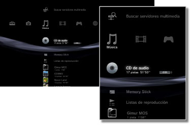

Música > Categoría Música
Categoría Música
En  (Música) se muestran los siguientes iconos. Los iconos pueden variar en función de las condiciones de uso.
(Música) se muestran los siguientes iconos. Los iconos pueden variar en función de las condiciones de uso.

 |
(Nombre de título) | Muestra el panel de control de tamaño reducido. Este icono solamente aparecerá si se reproduce contenido de música. |
|---|---|---|
 |
Buscar servidores multimedia | Inicia una búsqueda de servidores multimedia DLNA conectados en la misma red. |
 |
Servidor multimedia | Permite la conexión a servidores multimedia DLNA y la reproducción de la música que haya almacenada en ellos. El icono mostrado variará en función del tipo de servidor. |
 |
(nombre del título) | Permite reproducir un Super Audio CD. |
 |
(título del CD) | Permite reproducir un CD de audio. |
 |
Disco de datos | Permite reproducir los archivos de música almacenados en discos grabables compatibles como, por ejemplo, CD-R o DVD-R. |
|
Disco DSD | Permite reproducir los archivos de música con formato DSD almacenados en discos compatibles como, por ejemplo, DVD-R. |
 |
Memory Stick™ | Permite reproducir archivos de música guardados en un soporte Memory Stick™.* |
 |
SD Memory Card | Permite reproducir archivos de música guardados en una SD Memory Card.* |
 |
CompactFlash® | Permite reproducir archivos de música guardados en una tarjeta CompactFlash®.* |
 |
PSP™ (PlayStation®Portable) | Permite reproducir archivos de música guardados en un soporte Memory Stick™ de un sistema PSP™. |
 |
PSP™(PlayStation®Portable) | Permite reproducir archivos de música guardados en el sistema de almacenamiento del sistema PSP™go. |
 |
Cámara digital | Permite reproducir archivos de música guardados en una cámara digital. |
 |
WALKMAN®/ATRAC Audio Device (WALKMAN®) | Permite reproducir archivos de música guardados en un dispositivo de audio WALKMAN®/ATRAC Audio Device (WALKMAN®). |
 |
ATRAC Audio Device | Permite reproducir archivos de música guardados en un dispositivo ATRAC Audio Device. |
 |
Dispositivo USB | Permite reproducir archivos de música guardados en un dispositivo de almacenamiento masivo USB. |
 |
Listas de reproducción | Puede crear listas de reproducción o modificar o reproducir listas de reproducción ya creadas. |
 |
(carpeta) | Este icono se mostrará para las carpetas creadas mediante un ordenador en un soporte de almacenamiento. |
 |
(archivos guardados en el disco duro) | Permite reproducir archivos de música guardados en el disco duro del sistema PS3™. Si hay disponibles datos de imagen, se mostrarán las miniaturas correspondientes. |
| * |
Para poder utilizar los soportes de almacenamiento con determinados modelos, necesitará un adaptador USB apropiado (no incluido). Cuando los utilice con un adaptador USB, los soportes de almacenamiento aparecerán como |
|---|
 (Dispositivo USB).
(Dispositivo USB).Notas
- Si desea obtener más información acerca de DLNA, consulte
 (Ajustes) >
(Ajustes) >  (Ajustes de red) > [Conexión al servidor multimedia] en esta guía.
(Ajustes de red) > [Conexión al servidor multimedia] en esta guía. - Es posible que, en raras ocasiones, los discos u otros soportes no funcionen correctamente al reproducirlos en el sistema PS3™. Esto se debe principalmente a las variaciones en el proceso de fabricación o codificación del software.
- Si se emite sonido de un CD Super Audio desde el conector DIGITAL OUT (OPTICAL) del sistema, se produce una reproducción simple (reproducción a 44,1 kHz con 16 bits).
Aviso
Los discos Super Audio CD no se pueden reproducir en ciertos sistemas PS3™. Para más información, consulte [Tipos de discos que se pueden reproducir].